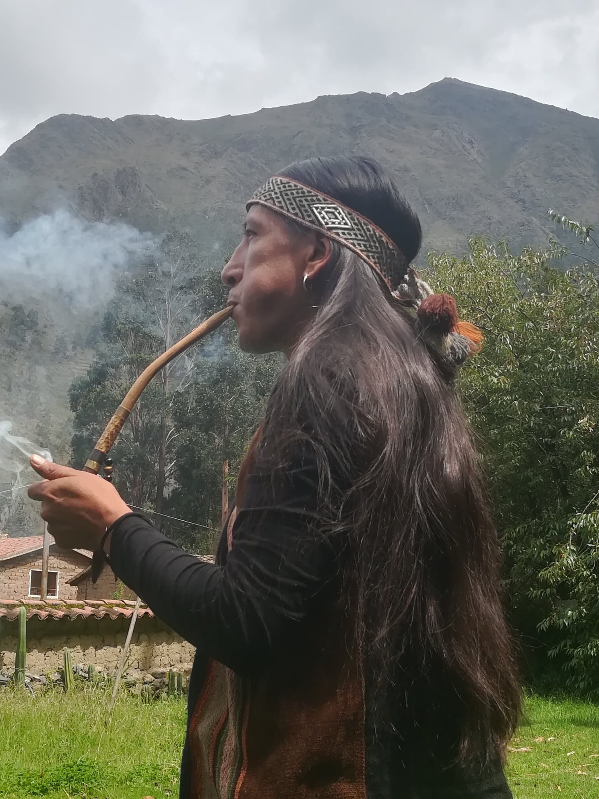
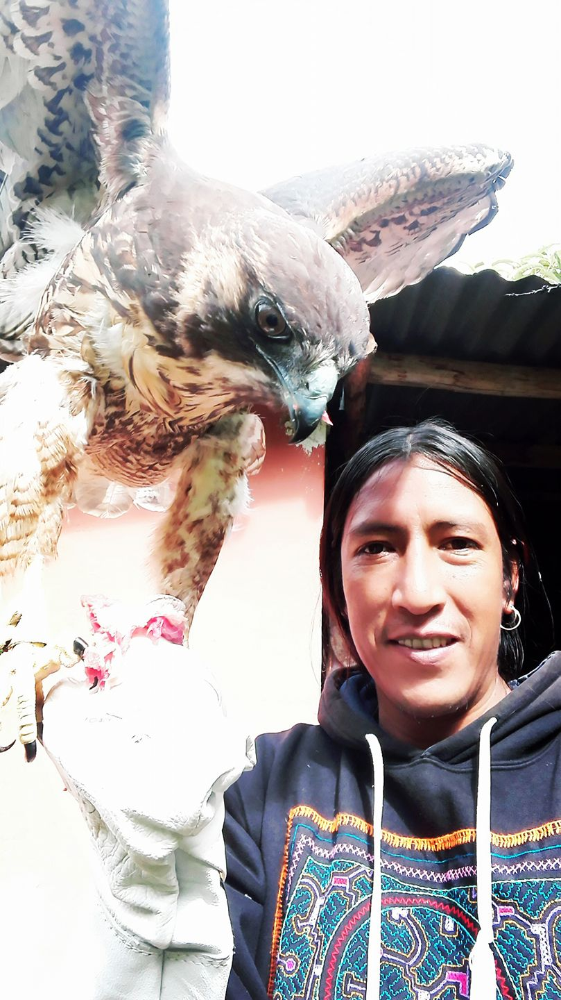
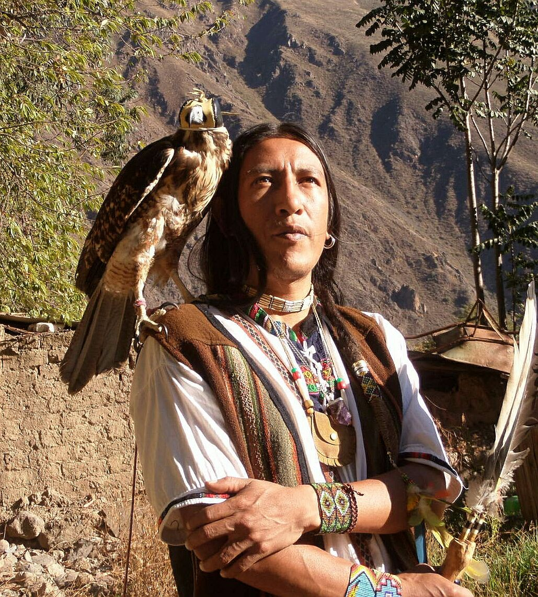
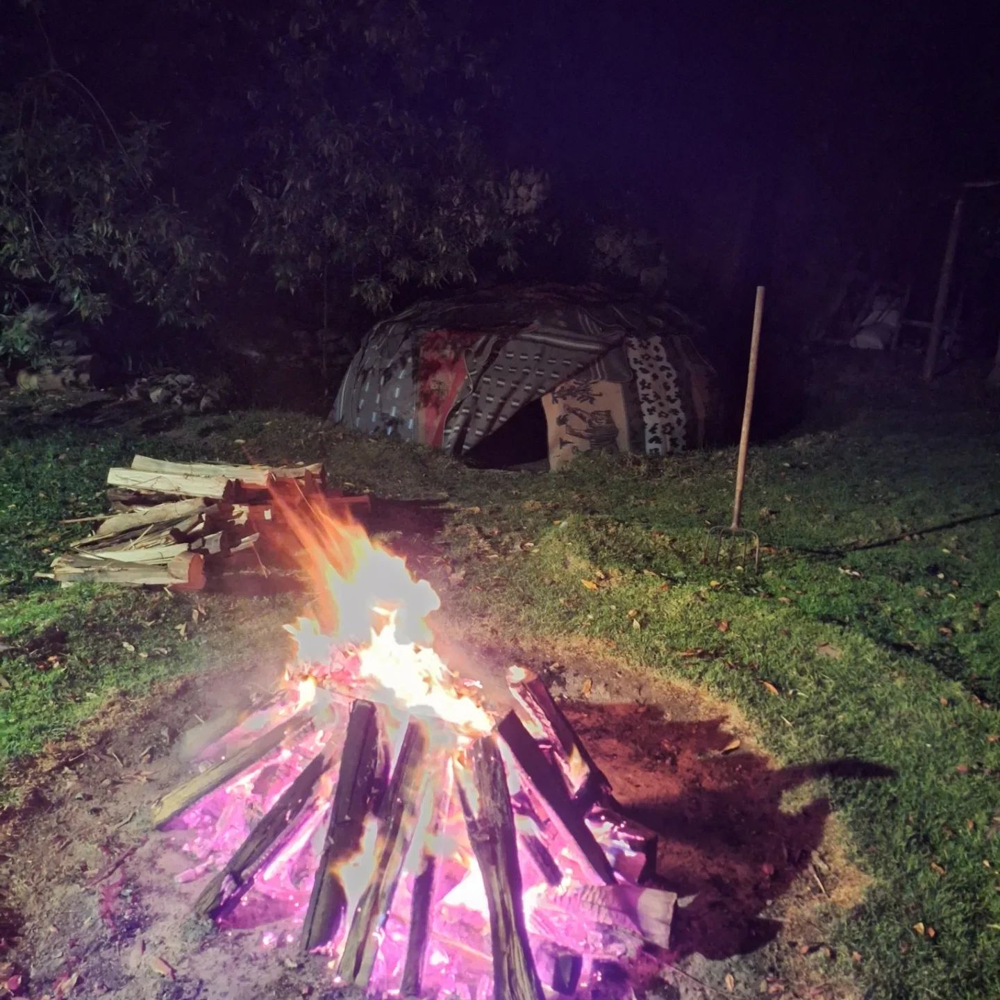
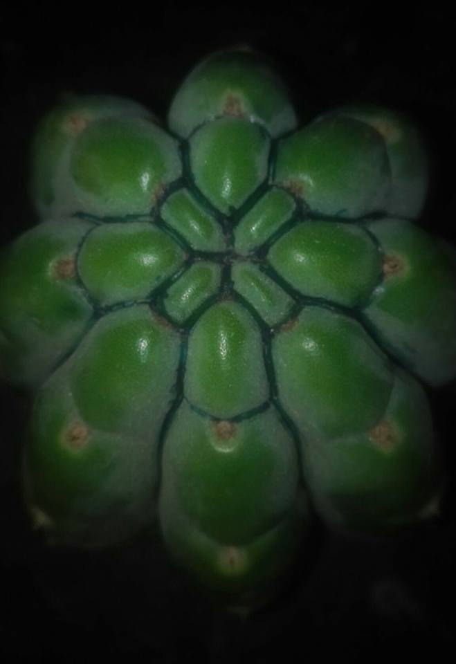
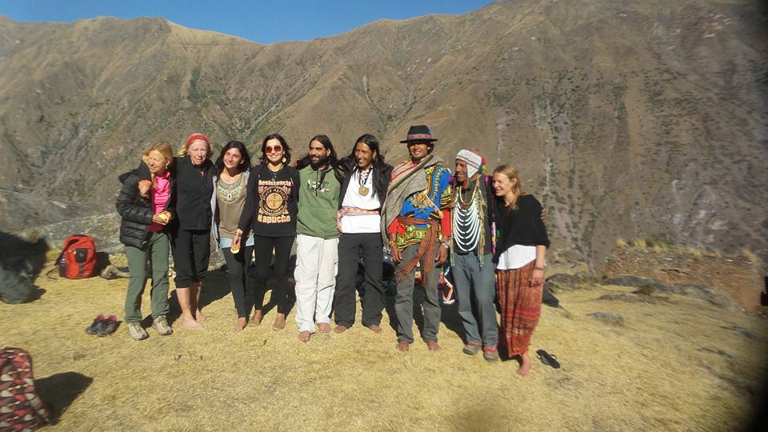
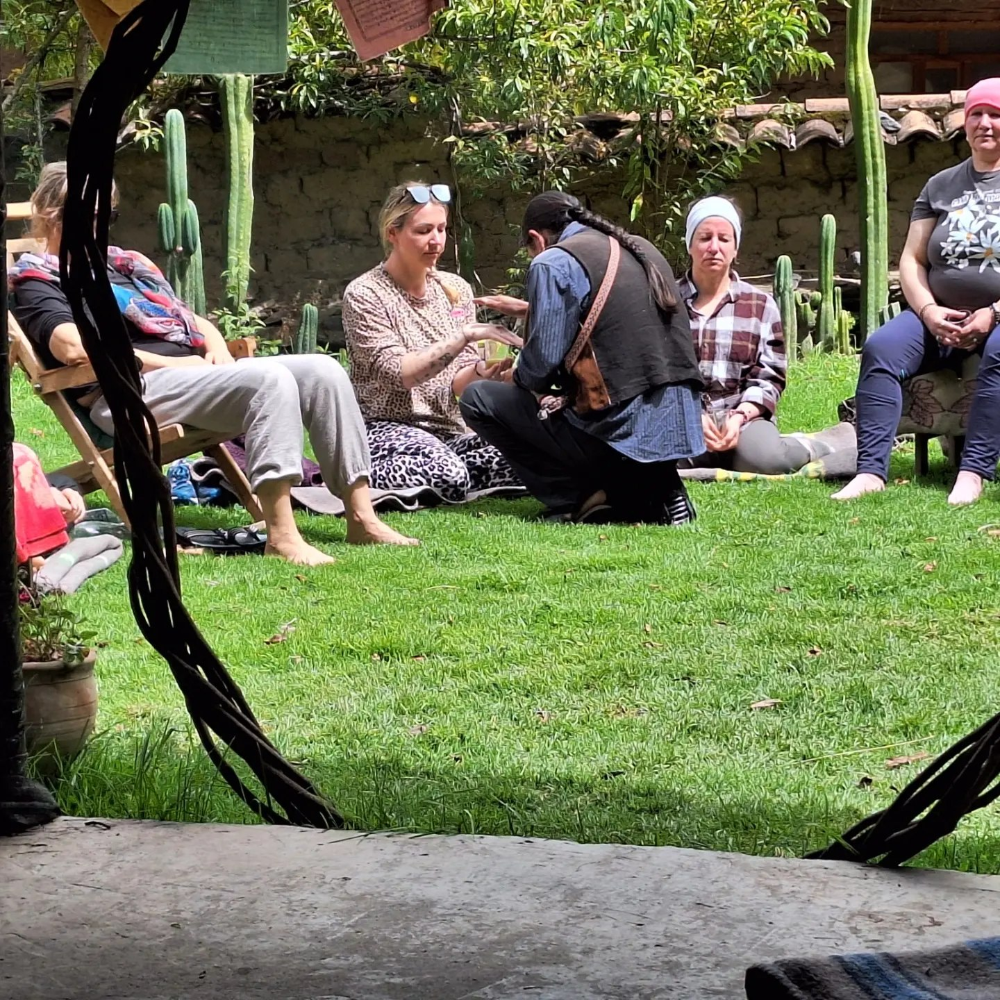
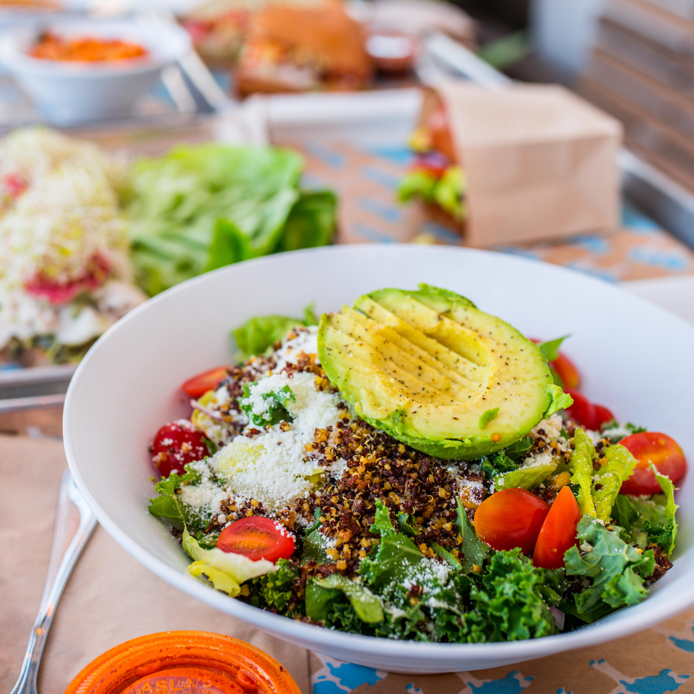
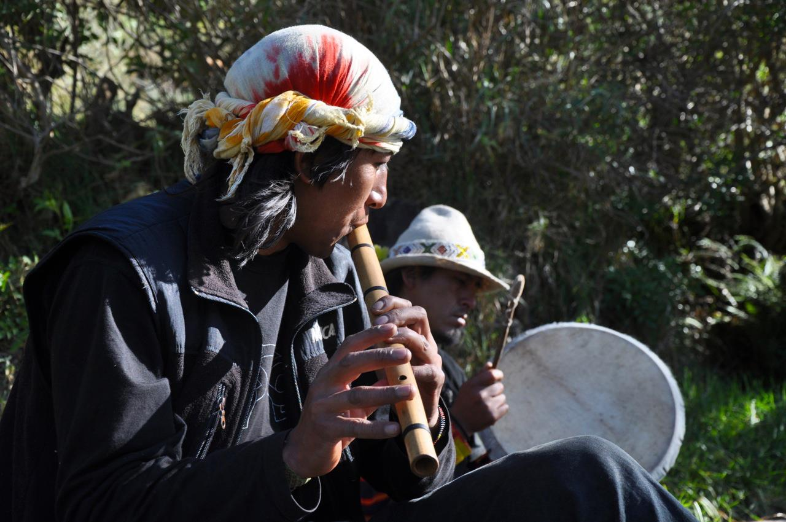

Ceremonia de Wachuma
Ritual transformador con la medicina sagrada del San Pedro. Orientación, sanación de traumas y reconexión con tu espiritualidad bajo guía experta.
Saber más →Bienvenido a la Pachamama
Ceremonias de San Pedro (wachuma) y temazcal guiadas con respeto ancestral en el corazón del Valle Sagrado de los Incas.
Un lugar seguro para sanar
Consumir San Pedro (huachuma) es una práctica altamente ritualizada con riesgos significativos para la salud si no se lleva a cabo de la manera adecuada. Es fundamental acercarse con el máximo respeto, bajo la guía de un chamán experimentado y en un entorno seguro.
Siempre consulta a profesionales de la salud antes de tomar cualquier decisión. Para participar con nosotros solicitamos consentimiento informado, evaluación médica y constancia de tu médico de que no padeces: enfermedades cardíacas, hipertensión, trastornos psiquiátricos, epilepsia o asma.
La ceremonia debe ser en un espacio donde tanto la persona como el curandero se sientan cómodos y protegidos. Con esta intención he construido un espacio bonito y seguro en Ollantaytambo.


Sobre mí
Curandero · Nativo del Valle Sagrado
Vengo de una familia de curanderos y parteras. En esta generación corro con la responsabilidad de compartir el conocimiento de mis abuelos. Soy nativo del Valle Sagrado, Ollantaytambo.
Desde hace más de 20 años me dedico a compartir la medicina del San Pedro, un trabajo que asumo con mucha responsabilidad y alegría. Mi enfoque combina el respeto por las tradiciones ancestrales con un espacio seguro y acogedor para cada persona que llega.
Lares K'ikllu, Ollantaytambo
Junto a Apu Lodge, Cusco, Perú
Qué ofrecemos
Cada servicio es una puerta hacia la comprensión de lo que tu cuerpo, mente y espíritu realmente necesitan.
Ritual transformador con la medicina sagrada del San Pedro. Orientación, sanación de traumas y reconexión con tu espiritualidad bajo guía experta.
Saber más →Casa de sudor ancestral para purificación física y energética. Cantos, oraciones y plantas medicinales en un ritual de renacimiento.
Saber más →Diferentes opciones de hospedaje cerca de nuestro santuario para una estadía cómoda antes y después de tu ceremonia.
Orientación nutricional antes y después de la toma para asegurar una mejor absorción y una integración más profunda.
Coordinamos con agencias de confianza para que disfrutes las maravillas de Ollantaytambo y el Valle Sagrado.
Espacio agradable para acampar en conexión con la naturaleza, ideal para quienes buscan una experiencia más inmersiva.
La medicina
El San Pedro o wachuma es una planta cactácea cuyo hábitat se extiende por la costa del Perú y regiones de la cordillera andina. Su principio activo, la mezcalina, es extraída mediante cocción por varias horas, acompañada de ícaros y oraciones que armonizan los poderes de la medicina.
Los registros más antiguos provienen de culturas como Caral y Chavín, hace aproximadamente 4000 años. Hoy, los maestros curanderos seguimos utilizando sus beneficios para orientar, sanar traumas y reconocer las crisis espirituales en los procesos de vida.
La planta actúa como una llave que permite espiritualizar el cuerpo y corporizar el espíritu, integrando ambas dimensiones. Ayuda a reconocer vínculos tóxicos, abrir nuevos procesos de reinicio y liberar energías que limitan nuestro potencial.

Purificación ancestral
La palabra temazcal proviene del náhuatl y significa «casa de sudor». Una tradición milenaria de Mesoamérica practicada durante siglos por diversas culturas indígenas.
En el interior se calientan piedras volcánicas con fuego. Sobre ellas se vierten infusiones de plantas medicinales — romero, eucalipto, salvia o ruda — creando un ambiente intenso y ritualizado, guiado por cantos, oraciones y momentos de silencio.

Tu camino
Evaluación médica, consentimiento informado y dieta adecuada. Nos conocemos, aclaramos expectativas y preparamos el espacio interior para la ceremonia.
Ritual guiado con ícaros, oraciones y la medicina sagrada. Un espacio seguro donde puedes entregarte al proceso con confianza y respeto.
Dieta post-ceremonia, descanso y acompañamiento. La sanación no termina con la ceremonia — es un camino que continuamos juntos.
Historias de sanación
«A lo largo de los años he regresado muchas veces a Perú para trabajar con Arturo en ceremonia sagrada. Cada vez es una experiencia de aprendizaje, crecimiento y conexión con nuestra madre tierra. Es un curandero experimentado que aborda la medicina con respeto y humildad.»
«Leí muchos libros sobre la importancia de la persona que guía la ceremonia, pero para entenderlo hay que vivirlo. Cada vez que intentaba mirar a Arturo con gratitud, recibía el mensaje: no me agradezcas, estoy aquí para ayudarte a conectar. Gracias a los espíritus y a la Pachamama.»
«Qué alma hermosa, que se ríe con los ojos. Gratitud fuerte por esa conexión que el universo me trajo desde lo alto del Perú hasta mi corazón.»
Galería
Recuerdos de ceremonias, encuentros y momentos sagrados en Ollantaytambo.








Preguntas frecuentes
Arturo viene de una familia de curanderos con más de 20 años de experiencia. Su enfoque se basa en la humildad, el respeto y la seguridad — sin ego, centrado en ayudarte a conectar con la Pachamama y los espíritus que te guían.
Sí. Solicitamos consentimiento informado, evaluación médica y constancia de tu médico confirmando que no padeces enfermedades cardíacas, hipertensión, trastornos psiquiátricos, epilepsia o asma.
Ofrecemos alojamiento cerca del santuario, orientación de dieta pre y post ceremonia, y coordinación de tours por el Valle Sagrado según tus necesidades.
Contáctanos por WhatsApp al +51 984 011 399 o mediante el formulario de contacto. Responderemos lo antes posible para coordinar fechas y preparación.
En nuestro santuario en Lares K'ikllu, Ollantaytambo, junto a Apu Lodge, en el corazón del Valle Sagrado de los Incas, Cusco, Perú.
Contacto
Cualquier consulta, contáctanos. Intentaremos responderte en el menor tiempo posible.